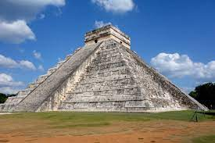

Maquetación Web
HTML Y CSS
Principal
Chichén Itzá

¿Qué cultura es Chichén Itzá? Resultado de imagen para Chichén Itzá civilización maya La legendaria ciudad maya de Chichén Itzá, Patrimonio de la Humanidad declarada por la UNESCO desde 1988 y Maravilla del Mundo desde 2007, sobresalió como centro cultural y político de la vieja civilización maya y fue uno de los asentamientos más extensos del centro-norte de la península de Yucatán.
Formularios
NOMBRES
UBICACION
PAIS DE ORIGEN